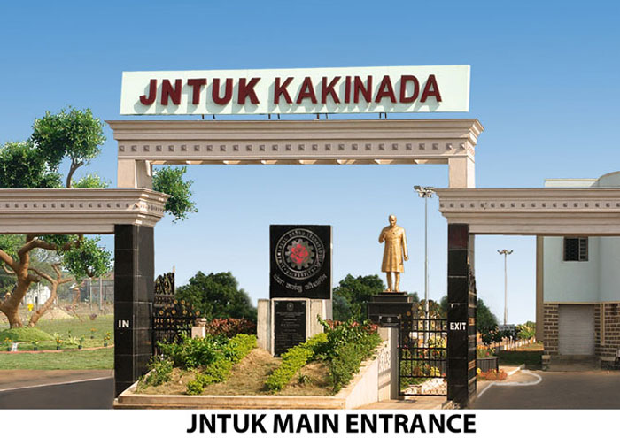
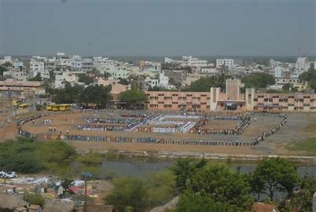

.jpg)

.jpg)
Ongole is a city in Prakasam district of the Indian
state
of Andhra Pradesh. It is the headquarters of Prakasam district and
also the mandal headquarters of Ongole mandal in Ongole revenue division.
Ongole cattle, an indigenous breed of oxen, derived its name from Ongole.
.jpg)
The town's history dates from 230 BCE with the era of
the Mauryas and Satavahanas who ruled most of
what is now Andhra Pradesh. A few inscriptions dating to the Satavahana period have been found in
the village China Ganjam, near Ongole. After the Satavahanas, this place came into the limelight
again during the Kakatiya dynasty, when the nearby towns of Motupalli and VodaRevu served as major
seaports. Ongole is also mentioned in the inscriptions of the Pallava rulers of the 3rd and 4th century A.D.
The city was also ruled by Krishna Deva Raya. The last dynasty to rule the Ongole region before the
British was the Mandapati dynasty (zamindars). According to the historical inscriptions available at Sri
Raja Rajeshwara Swamy Temple complex in Ongole City was constructed by Cholas. Kaasi Visweswara Swamy
temple, Chennakesava Swamy Temple and Veeranjaneya Swamy temple were built in the early 17th century by
King Vankayalapati mantri and Army Chief.
Ongole district came into existence on 02-02-1970 with the carving out portions of Markapur revenue
division from Kurnool, Ongole revenue division from Guntur and Kandukur revenue division from Nellore
districts. It was renamed as Prakasam district in 1972 in memory of the eminent freedom fighter, later
Chief Minister of the composite Madras State and the first Chief Minister of Andhra Pradesh State, late
Andhra Kesari Sri Tanguturi Prakasam Panthulu, who was born at Vinodarayuni palem, a hamlet of Kanuparthi
village of Naguluppala Padu Mandal of this district.
Ongole is located at 15.5°N 80.05°E. It has an
average elevation of 10 m (33 ft) AMSL and is situated on the plains. The city is around 15.54miles (25 km) to the
west of the Bay of Bengal on the east coast of India. Summer temperatures reach as high as 44 °C (111 °F)
(March–May)
has the highest temperatures., but these are usually followed by monsoon rains and the annual average rainfall 794.5
mm
receiving both northeast and southwest monsoons. The winter season (from November/ to February) is the most
enjoyable
with a pleasant climate. Winter months are usually dry, with little to no rainfall. The average annual temperature
is 24.5 C.
Cyclones may occur any time of the year, but occur more commonly October–December.
.jpg)
The PDCA-CSR Sarma College Ground is one of the home
grounds of the Andhra cricket team, with a first-class cricket status
and hosts Ranji Trophy matches.The ground has recorded the first ever triple century by a wicketkeeper in Ranji
Trophy, achieved
by Srikar Bharat of the Andhra cricket team. The police parade grounds hosted the first state-level Girl Football
Tournament in
October 2016.
The city is connected by road to major destinations. National Highway 16, a part of Golden Quadrilateral highway network, bypasses the city.National Highway 216 connects the city with Kathipudi.The city has a total road length of 738.50 km.Ongole bus station is owned and operated by Andhra Pradesh State Road Transport Corporation. The station is also equipped with a bus depot for storage and maintenance of buses.The 'Passengers delight project' was implemented at the bus station for improving cleanliness and modernizing it. Ongole railway station is categorized as a Non-Suburban Grade-3 (NSG-3) station in the Vijayawada railway division.
Return to TopAgriculture is the primary industry of Ongole, and the city is a major center for tobacco trading in Andhra Pradesh. Export of oxen Ongole bulls are a breed of oxen that are exported to many countries. The Brahman bull in America is an off-breed of the Ongole. Ongole Island, in Malaysia, holds many Ongole oxen. The population of Ongole off-breed animals in Brazil is said to be around several millions. The original breed of Ongole stud bulls are found in a small region around Ongole town between the Gundlakamma and Musi rivers.
Return to TopThe primary and secondary school education is imparted by government, aided and private schools of the School Education Department of the state.Instruction in the schools is given in English and Telugu. The Rajiv Gandhi Institute of Medical Sciences (RIMS) is a medical college in Ongole.Some of the famous educational institutes include RIMS, QIS College of Engineering and Technology, QIS Institute of Technology,RISE Groups of Institutions,Indira Priyadarshini Law College, Prakasam Engineering College,and the Pace Institute of Technology and Sciences.
Return to Top